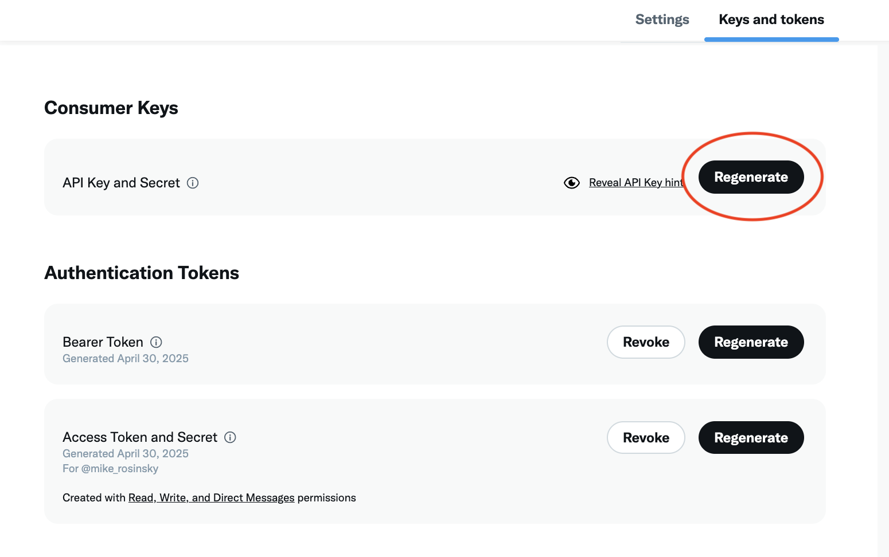

Mike's X Developer API Blog
"How about 'Hook into what's happening', y'know for our slogan!"
"Mike that's awful"
"Yeah..."
Hey everyone, thanks for checking out my tutorial.
My name is Mike Rosinsky. I'm a software engineer on the X Developer Platform team, and I wanted to make a blog-style page to showcase some fun demos and other things relating to the API.
This doesn't intend to serve as a replacement for docs, but maybe can give some good insight into what you can create with the APIs that X offers.
Using Webhooks with the X Developer API
☎️ Don't call us, we'll call you!
What's a Webhook?
Webhooks are an efficient way to receive real-time data from the X Developer API. It's an industry standard practice, and a growing number of X's products currently support webhooks.
Instead of polling the API servers to check if any new data is available on a regular interval, the API will reach out to you automatically!
You register your server's callback URL with X, and when new data becomes available that matches your criteria, the API will reach out to your server, deliver the event, and disconnect.
This is all secured using industry standard encryption, making it an ideal choice for efficient, event-driven data delivery.
A growing number of X's real-time products support webhook delivery. These products include:
- Filtered Stream
- Account Activity API
- X Activity API
Writing a Basic Webhook App
In this section, we'll write a basic app to get started with receiving webhook events from X.
Here's the requests that the app will need to handle:
GETrequests for security challenge checksPOSTrequests for receiving events
After we make the app, we'll need to host it with a public-facing HTTPS URL. I'll show you some options for quick, free methods for getting this stood up quickly so you can test.
The Basic App
Let's start with a basic skeleton for our webhook app. We'll build it incrementally, adding features step by step.
from flask import Flask
from waitress import serve
HOST = "0.0.0.0"
PORT = 8080
app = Flask(__name__)
@app.route('/webhooks', methods=['GET', 'POST'])
def webhook_request():
if request.method == 'GET':
# Stub - we'll implement the security check here
print("Got GET request")
return '', 200
elif request.method == 'POST':
# Stub - we'll implement webhook event handling here
print("Got POST request")
return '', 200
# Got an invalid method
return 'Method Not Allowed', 405
def main():
print(f"Hosting WSGI server on {HOST}:{PORT}")
serve(app, host=HOST, port=PORT)
if __name__=='__main__':
main()
This gives us a basic Flask app with stub endpoints for both GET and POST requests. Now let's implement each part step by step.
Implementing the Security Check (GET Request)
X uses a Challenge-Response Check (CRC) to verify that your webhook endpoint is legitimate and secure. When you register a webhook URL, X will send a GET request with a crc_token parameter. Your app must respond with an HMAC SHA-256 hash of that token using your consumer secret.
Getting Your Consumer Secret
To get your consumer secret, go to your X Developer Portal and navigate to your app's settings. You'll find the Consumer Keys section where you can view and regenerate your API keys:

Copy the "API Key Secret" (also called Consumer Secret) and set it as an environment variable before running your app.
Why This Matters
The CRC check ensures that:
- Your endpoint is accessible and responding
- Only you (with your consumer secret) can validate the webhook
- The connection between X and your server is secure
Implementation
First, let's add the necessary imports and environment variable setup:
from flask import Flask, request, jsonify
from waitress import serve
import base64
import hashlib
import hmac
import os
import json
import sys
app = Flask(__name__)
# Your Twitter consumer secret - set this as an environment variable
CONSUMER_SECRET = os.environ.get("CONSUMER_SECRET")
if CONSUMER_SECRET is None:
print("Missing consumer secret. Ensure CONSUMER_SECRET env var is set.")
sys.exit(1)
HOST = "0.0.0.0"
PORT = 8080
Now let's implement the GET request handler:
@app.route('/webhooks', methods=['GET', 'POST'])
def webhook_request():
# Handle GET request (CRC challenge)
if request.method == 'GET':
crc_token = request.args.get('crc_token')
print(f"CRC Token received: {crc_token}")
if crc_token is None:
print("Error: No crc_token found in the request.")
return json.dumps({'error': 'No crc_token'})
# Creates HMAC SHA-256 hash from incoming token and your consumer secret
sha256_hash_digest = hmac.new(
CONSUMER_SECRET.encode('utf-8'),
msg=crc_token.encode('utf-8'),
digestmod=hashlib.sha256
).digest()
# Construct response data with base64 encoded hash
response = {
'response_token': 'sha256=' + base64.b64encode(sha256_hash_digest).decode('utf-8')
}
# Returns properly formatted json response
return jsonify(response)
elif request.method == 'POST':
# Stub - we'll implement webhook event handling here
print("Got POST request")
return 'Not implemented yet', 501
# Got an invalid method
return 'Method Not Allowed', 405
How the CRC Check Works
- X sends a challenge: GET request with
crc_tokenparameter - You create an HMAC hash: Using SHA-256 with your consumer secret and the token
- You respond: With
{"response_token": "sha256=<base64_hash>"} - X verifies: Compares your hash with what they expect
Implementing Webhook Events (POST Request)
Now let's implement the POST request handler to receive actual webhook events from X.
Replace the POST stub with this implementation:
@app.route('/webhooks', methods=['GET', 'POST'])
def webhook_request():
# Handle GET request (CRC challenge)
if request.method == 'GET':
# Truncated...
# Handle POST request (Webhook event)
elif request.method == 'POST':
# Use the json library to render and dump the data.
event_data = request.get_json()
if event_data:
print(json.dumps(event_data, indent=2))
else:
# Log if the request body wasn't JSON or was empty
print(f"Body: {request.data.decode('utf-8')}")
# Return 200 OK to acknowledge receipt
return '', 200
# Got an invalid method
return 'Method Not Allowed', 405
Processing Events
The POST handler:
- Parses the JSON payload from the request body
- Logs the event data for debugging and processing
- Returns 200 OK to acknowledge successful receipt
- Handles edge cases like non-JSON payloads
Running the Complete App
Now that we have both GET and POST implemented, let's add a proper main function:
def main():
print("--- Starting Webhook App ---")
print(f"Using CONSUMER_SECRET from environment variable.")
print(f"Running with Waitress WSGI server on {HOST}:{PORT}")
serve(app, host=HOST, port=PORT)
if __name__ == '__main__':
main()
To run the app:
-
Set your consumer secret:
export CONSUMER_SECRET="your_consumer_secret_here" -
Run the app:
python sample_app.py
Next Steps
Your webhook app is now complete! To use it:
- Host it publicly with HTTPS (required for webhooks)
- Register the URL in your X Developer Portal
- Configure your webhook to listen for specific events
- Test with real events as they occur
The app will now properly handle both the security challenge and incoming webhook events from X.
The Complete Code
Here's the complete, working webhook app that combines everything we've built:
from flask import Flask, request, jsonify
from waitress import serve
import base64
import hashlib
import hmac
import os
import json
import sys
app = Flask(__name__)
# Your Twitter consumer secret - set this as an environment variable
CONSUMER_SECRET = os.environ.get("CONSUMER_SECRET")
if CONSUMER_SECRET is None:
print("Missing consumer secret. Ensure CONSUMER_SECRET env var is set.")
sys.exit(1)
HOST = "0.0.0.0"
PORT = 8080
@app.route('/webhooks', methods=['GET', 'POST'])
def webhook_request():
# Handle GET request (CRC challenge)
if request.method == 'GET':
crc_token = request.args.get('crc_token')
print(f"CRC Token received: {crc_token}")
if crc_token is None:
print("Error: No crc_token found in the request.")
return json.dumps({'error': 'No crc_token'})
# Creates HMAC SHA-256 hash from incoming token and your consumer secret
sha256_hash_digest = hmac.new(
CONSUMER_SECRET.encode('utf-8'),
msg=crc_token.encode('utf-8'),
digestmod=hashlib.sha256
).digest()
# Construct response data with base64 encoded hash
response = {
'response_token': 'sha256=' + base64.b64encode(sha256_hash_digest).decode('utf-8')
}
# Returns properly formatted json response
return jsonify(response)
# Handle POST request (Webhook event)
elif request.method == 'POST':
# Use the json library to render and dump the data.
event_data = request.get_json()
if event_data:
print(json.dumps(event_data, indent=2))
else:
# Log if the request body wasn't JSON or was empty
print(f"Body: {request.data.decode('utf-8')}")
# Return 200 OK to acknowledge receipt
return '', 200
# Got an invalid method
return 'Method Not Allowed', 405
def main():
print("--- Starting Webhook App ---")
print(f"Using CONSUMER_SECRET from environment variable.")
print(f"Running with Waitress WSGI server on {HOST}:{PORT}")
serve(app, host=HOST, port=PORT)
if __name__ == '__main__':
main()
Next Steps
Now that the server is running locally, you'll need to host it to generate a publicly-available HTTPS URL.
This can be done for free using public tools like ngrok, deployed to a cloud environment, or any other means you wish.
In the next section, we'll register the URL with X so we can start receiving events.
Registering a Webhook With X
Registering a webhook involves passing the HTTPS URL for your webhook app to X's servers, so they know where to send events to.
The official docs are here: https://docs.x.com/x-api/webhooks/introduction
Routes
The X API offers the following endpoints to manage your registered webhooks:
| Method | Route | Description |
|---|---|---|
GET | /2/webhooks | List all registered webhooks for your account |
POST | /2/webhooks | Create a webhook (see below for JSON body) |
DELETE | /2/webhooks/:webhook_id | Delete a webhook by ID |
PUT | /2/webhooks/:webhook_id | Manually trigger a security check to re-validate a webhook |
Register a Webhook
To register the webhook, you'll use the POST route, along with the following JSON body:
{
"url": "<YOUR WEBHOOK HTTPS URL>"
}
We can use curl to test this:
curl https://api.x.com/2/webhooks -X POST -d '{"url": "<YOUR WEBHOOK HTTPS URL>"}'
When this request is sent, X will send a GET request to the provided URL to validate that the webhook belongs to you.
This is the security check we demonstrated in the last section.
On successful validation, the webhook will be created:
"data": {
"created_at": "2025-10-15T20:53:05.000Z",
"id": "1146654567674912769",
"url": "<YOUR WEBHOOK HTTPS URL>",
"valid": true
}
List your Webhooks
Now we can call the GET route to see our registered webhooks:
curl https://api.x.com/2/webhooks
{
"data":[
{
"created_at":"2025-10-15T20:53:05.000Z",
"id":"1146654567674912769",
"url":"<YOUR WEBHOOK HTTPS URL>",
"valid":true
}
],
"meta":{
"result_count":1
}
}
Re-validating your webhook
At regular intervals (~24hrs), X will attempt to validate that your webhook is still operational.
X does this by sending the GET CRC check again.
If for some reason this validation fails, the webhook will be marked as "valid":false and will no longer receive events.
To re-validate the webhook, you can call the PUT request, which will manually trigger the re-validation process:
curl https://api.x.com/2/webhooks/1146654567674912769 -X PUT
Providing the validation was successful, our webhook will be re-validated:
{
"data":{
"valid":true
}
}